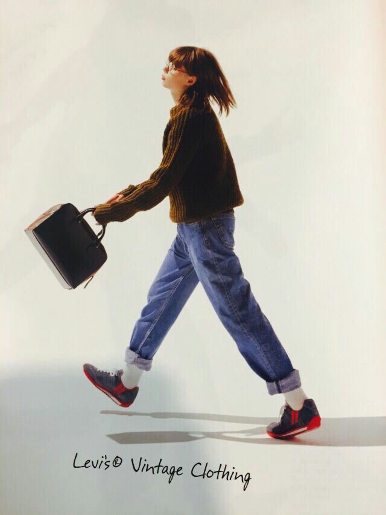

Spoiler alert if you haven't watched it, but in season five, Buffy's mother dies, and not through supernatural causes. I believe Buffy will have been 20 when this happens. That episode, The Body, remains one of the best depictions of what it's like to receive the news of a death that I have ever watched. I hadn't gone through my own loss of a parent when I first watched that episode, but have rewatched it since. It's heart-wrenching, but brings me even closer to Buffy as we watch her muddle through even the hardest battles of life. My question 'what would Buffy do' has been my companion in grief too, the elements of her character that are very human alongside the way she can do a flying kick into a bad guys face, is the perfect balance when looking to her for inspiration and guidance. The way they wrote her character, a superhero who goes through so many very relatable struggles, allows us all to see Buffy within us, and bring out our strongest side in the moments when it feels very impossible to find strength. She's been with me through the most formative years of my life, and will be with me for many, many more.
